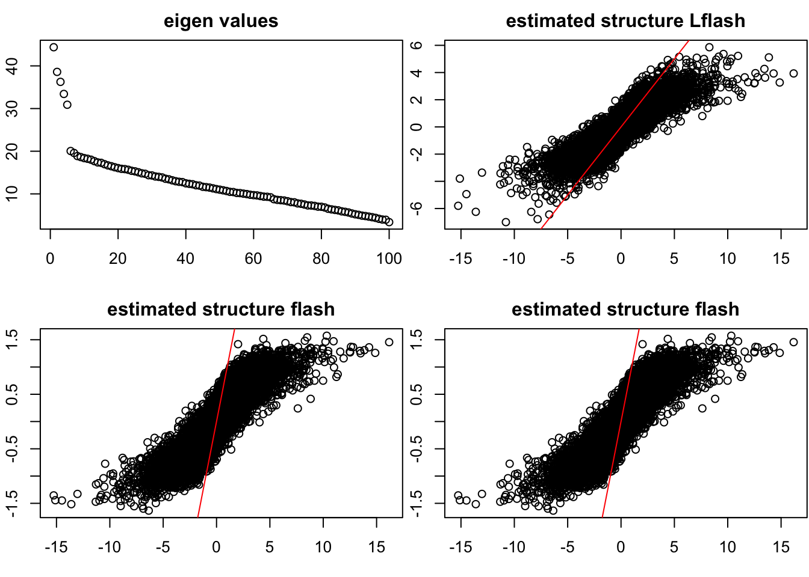
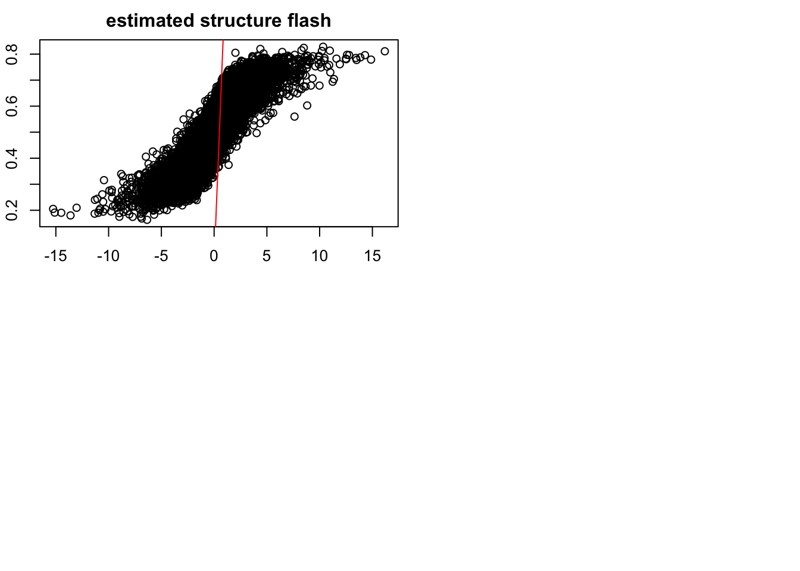
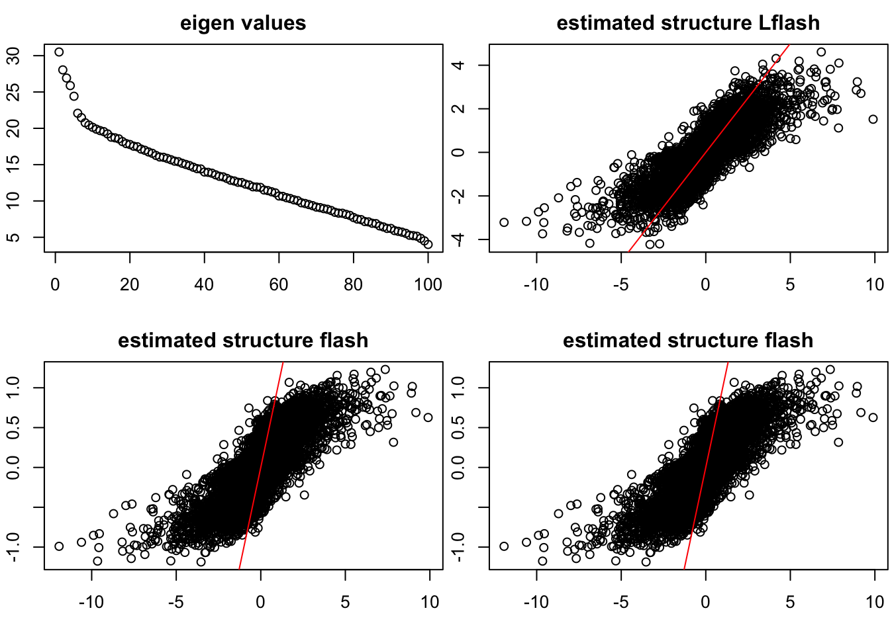
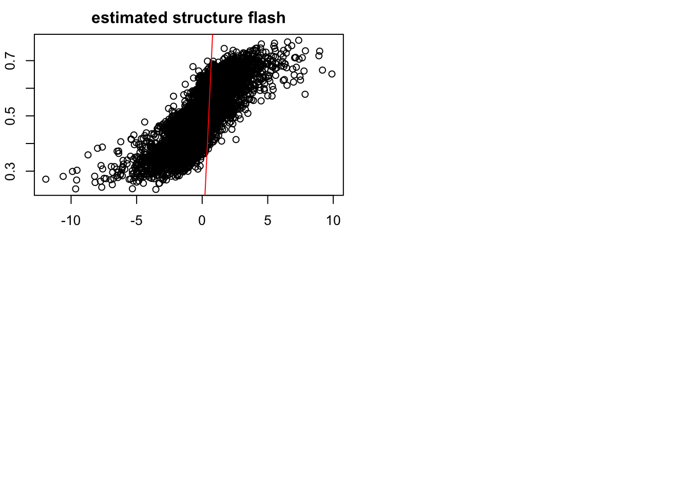
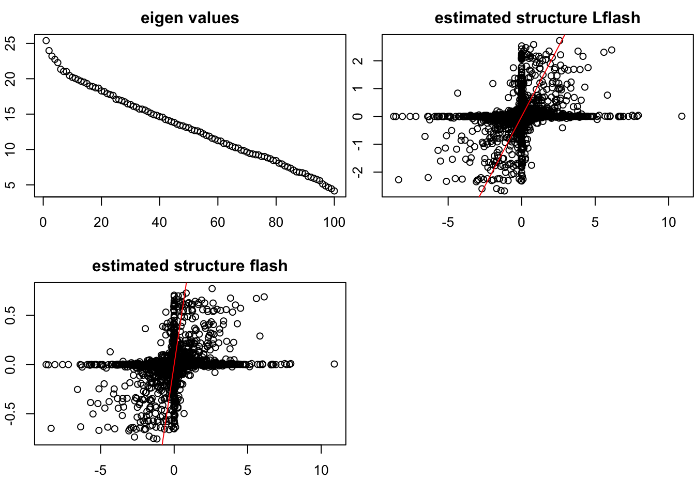

Last updated: 2017-03-07
Code version: b2725e8
This report is for the simple implementation of Logistic flash. There are two versions of inference for the model, both of which have advantage and drawbacks. More discussions are needed. We assume that our data matrix is \(Y_{N \times P}\) where \(Y_{ij} = \pm 1\) (we use \(\pm 1\) rather than 0 or 1 here for the Boolean data). We first start from \(\mathbf{rank-one}\) and known variance model, which makes the derivation clear and easy to understand.
We discuss on the model with known variance and rank one structure. Our model is
\[\begin{eqnarray} \log\frac{P(Y_{ij} = 1|Z_{ij})}{P(Y_{ij} = -1 | Z_{ij})} = Z_{ij} \\ Z_{ij} = l_i f_j\\ f_j \sim \sum_{m'} \pi_{m'}^f N(f_j; 0, (\sigma_{m'}^f)^2) \\ l_i \sim \sum_m \pi_m^l N(l_i; 0, (\sigma_m^l)^2) \end{eqnarray}\]Here we allow that \((\sigma_{1}^f)^2 = 0\) and \((\sigma_{1}^l)^2=0\), which means we include the point mass into the prior for each component for \(f\) and \(l\).
We want to maximize \(F(q_f,q_l,q_z,\Theta)\) where \(\Theta = (\pi^l,\pi^f,\xi)\), \(\pi^l = (\pi^l_1,\cdots,\pi^l_{m_l})\), \(\pi^f = (\pi^f_1,\cdots,\pi^f_{m'_f})\) and \((\xi_{N\times P})_{(ij)} = \xi_{ij}, i = 1,\cdots, N, j = 1,\cdots, P\). The \(\pi^l\) and \(\pi^f\) are from the prior of the \(l\) and \(f\), and we will talk later about where \(\xi\) comes from.
We assume that the approximation of \(q_f(f)q_l(l)q_z(Z)\) is as following:
\[\begin{eqnarray} q_f(f) = \prod_j q_f(f_j) = \prod_j [\sum_{m'}\alpha^f_{jm'} N(\mu^f_{jm'},s^f_{jm'})]\\ q_l(l) = \prod_i q_l(l_i) = \prod_i [\sum_{m}\alpha^l_{im} N(\mu^l_{im},s^l_{im})] \end{eqnarray}\]we use the lower boud of the this objective function, which is
\[\begin{eqnarray} F(q_f,q_l,\Theta) & \geq &\int\int q(l)q(f)\log \frac{P(l)P(f)H(l,f,Y,\xi)}{q(l)q(f)}dldf\\ H(l,f,Y,\xi) &=& exp\{ \sum_{ij}[\frac{Y_{ij}l_if_j -\xi_{ij}}{2} + \log(h(\xi_{ij}))- \tau(\xi_{ij})(l_i^2 f_j^2 - \xi_{ij}^2) ] \} \\ \tau(\xi) &=& \frac{1}{4 \xi} \tanh(\frac{\xi}{2}) \end{eqnarray}\]Given \(\xi\), we can apply ASH to estimate the \(l_k\) and \(f_k\)
By plugging in the formula of \(H(l,f,\xi)\) into the lowerbound, we can obtain a Ash Type Maximization problem. So the update of \(l\) and \(f\) are following the ATM solution:
\[\begin{eqnarray} \mu_{l_i} &=& \frac{\frac{1}{2}\sum_j(Y_{ij}Ef_j)}{2\sum_j(\tau(\xi_{ij})Ef_j^2)}\\ \sigma^2_{l_i} &=& \frac{1}{2\sum_j(\tau(\xi_{ij})Ef_j^2)}\\ \mu_{f_j} &=& \frac{\frac{1}{2}\sum_i(Y_{ij}El_i)}{2\sum_j(\tau(\xi_{ij})El_i^2)}\\ \sigma^2_{f_j} &=& \frac{1}{2\sum_i(\tau(\xi_{ij})El_i^2)} \end{eqnarray}\]we use the lower boud of the this objective function, which is
\[\begin{eqnarray} F(q_f,q_l,\Theta) & \geq &\int\int q(l)q(f)\log \frac{P(l)P(f)H(l,f,Y,\xi)}{q(l)q(f)}dldf\\ H(l,f,Y,\xi) &=& exp\{ \sum_{ij}[\frac{Y_{ij}(\sum_k l_{ik} f_{kj}) -\xi_{ij}}{2} + \log(h(\xi_{ij}))- \tau(\xi_{ij})((\sum_k l_{ik} f_{kj})^2 - \xi_{ij}^2) ] \} \\ \tau(\xi) &=& \frac{1}{4 \xi} \tanh(\frac{\xi}{2}) \end{eqnarray}\]By plugging in the formula of \(H(l,f,\xi)\) into the lowerbound, we can obtain a Ash Type Maximization problem. So the update of \(l\) and \(f\) are following the ATM solution:
\[\begin{eqnarray} \mu_{l_{ik}} &=& \frac{\sum_j[\frac{1}{2} Y_{ij} -2 (\tau(\xi_{ij})\sum_{t \neq k} (El_{it}Ef_{tj})) ]Ef_{kj}}{2\sum_j(\tau(\xi_{ij})Ef_{kj}^2)}\\ \sigma^2_{l_{ik}} &=& \frac{1}{2\sum_j(\tau(\xi_{ij})Ef_{kj}^2)}\\ \mu_{f_{kj}} &=& \frac{\sum_i[\frac{1}{2} Y_{ij} -2 (\tau(\xi_{ij})\sum_{t \neq k} (El_{it}Ef_{tj})) ]El_{ik}}{2\sum_j(\tau(\xi_{ij})El_{ik}^2)}\\ \sigma^2_{f_{kj}} &=& \frac{1}{2\sum_i(\tau(\xi_{ij})El_{ik}^2)} \end{eqnarray}\] \[\begin{eqnarray} \xi_{ij}^2 = (\sum_k l_{ik} f_{kj})^2 = Z_{ij}^2 \end{eqnarray}\]which works pretty well.
Why the residual is important? It is because we need initialize the loading and factor for each new adding factor in the greedy algorithm adaptively.
Since in the last section, the update can also be applied into Backfitting algorithm, we can easily extend the current version to more precise version.
set.seed(9)
source('../code/GD_Rfuncrtions.R')
Data = datamaker(100,200,
c(0.3,0.2,0.1,0.4),c(0.1,0.5,1,2),1,
c(0.3,0.2,0.2,0.3),c(0.1,0.3,0.6,2),1,
K = 5)
pY_vec = 1/(1+exp(-as.vector(Data$Z)))
Y_vec_01 = sapply(pY_vec,function(x){rbinom(1,1,x)})
Y_vec = 2*( Y_vec_01 - 1/2)
# Y_vec = Y_vec_01
Y = matrix(Y_vec,nrow = 100, ncol = 200)
gflash = flashr::greedy(Y,K = 8)[1] 2
[1] 3
[1] 4
[1] 5
[1] 6Ltest = GL_flash(Y,K = 8)[1] 2
[1] 3
[1] 4
[1] 5
[1] "stop here due to no signal"sqrt(mean((Data$L_true %*% t(Data$F_true) - Ltest$l %*% t(Ltest$f))^2)) / sqrt(mean((Data$L_true %*% t(Data$F_true) )^2))[1] 0.5497998sqrt(mean((Data$L_true %*% t(Data$F_true) - gflash$l %*% t(gflash$f))^2)) / sqrt(mean((Data$L_true %*% t(Data$F_true) )^2))[1] 0.8071915par(mfrow = c(2,2),mar = c(5,4,4,2) - 1.9)
plot(svd(Y)$d,main = "eigen values")
plot(as.vector(Data$L_true %*% t(Data$F_true)),as.vector(Ltest$l %*% t(Ltest$f)),main = "estimated structure Lflash")
abline(0,1,col = "red")
plot(as.vector(Data$L_true %*% t(Data$F_true)),as.vector(gflash$l %*% t(gflash$f)),main = "estimated structure flash")
abline(0,1,col = "red")
plot(as.vector(Data$L_true %*% t(Data$F_true)),as.vector(gflash$l %*% t(gflash$f)),main = "estimated structure flash")
abline(0,1,col = "red")
library(boot)
plot(as.vector(Data$L_true %*% t(Data$F_true)),inv.logit(as.vector(gflash$l %*% t(gflash$f))),main = "estimated structure flash")
abline(0,1,col = "red")
set.seed(9)
source('../code/GD_Rfuncrtions.R')
Data = datamaker(100,200,
c(0.3,0.2,0.1,0.4),c(0.1,0.5,1,2),0.6,
c(0.3,0.2,0.2,0.3),c(0.1,0.3,0.6,2),0.6,
K = 5)
pY_vec = 1/(1+exp(-as.vector(Data$Z)))
Y_vec_01 = sapply(pY_vec,function(x){rbinom(1,1,x)})
Y_vec = 2*( Y_vec_01 - 1/2)
# Y_vec = Y_vec_01
Y = matrix(Y_vec,nrow = 100, ncol = 200)
gflash = flashr::greedy(Y,K = 8)[1] 2
[1] 3
[1] 4
[1] 5
[1] 6Ltest = GL_flash(Y,K = 8)[1] 2
[1] 3
[1] 4
[1] 5
[1] "stop here due to no signal"sqrt(mean((Data$L_true %*% t(Data$F_true) - Ltest$l %*% t(Ltest$f))^2)) / sqrt(mean((Data$L_true %*% t(Data$F_true) )^2))[1] 0.6284728sqrt(mean((Data$L_true %*% t(Data$F_true) - gflash$l %*% t(gflash$f))^2)) / sqrt(mean((Data$L_true %*% t(Data$F_true) )^2))[1] 0.8336038par(mfrow = c(2,2),mar = c(5,4,4,2) - 1.9)
plot(svd(Y)$d,main = "eigen values")
plot(as.vector(Data$L_true %*% t(Data$F_true)),as.vector(Ltest$l %*% t(Ltest$f)),main = "estimated structure Lflash")
abline(0,1,col = "red")
plot(as.vector(Data$L_true %*% t(Data$F_true)),as.vector(gflash$l %*% t(gflash$f)),main = "estimated structure flash")
abline(0,1,col = "red")
plot(as.vector(Data$L_true %*% t(Data$F_true)),as.vector(gflash$l %*% t(gflash$f)),main = "estimated structure flash")
abline(0,1,col = "red")
library(boot)
plot(as.vector(Data$L_true %*% t(Data$F_true)),inv.logit(as.vector(gflash$l %*% t(gflash$f))),main = "estimated structure flash")
abline(0,1,col = "red")
set.seed(9)
source('../code/GD_Rfuncrtions.R')
Data = datamaker(100,200,
c(0.3,0.2,0.1,0.4),c(0.1,0.5,1,2),0.3,
c(0.3,0.2,0.2,0.3),c(0.1,0.3,0.6,2),0.3,
K = 5)
pY_vec = 1/(1+exp(-as.vector(Data$Z)))
Y_vec_01 = sapply(pY_vec,function(x){rbinom(1,1,x)})
Y_vec = 2*( Y_vec_01 - 1/2)
# Y_vec = Y_vec_01
Y = matrix(Y_vec,nrow = 100, ncol = 200)
gflash = flashr::greedy(Y,K = 8)[1] 2Ltest = GL_flash(Y,K = 8)[1] "stop here due to no signal"sqrt(mean((Data$L_true %*% t(Data$F_true) - Ltest$l %*% t(Ltest$f))^2)) / sqrt(mean((Data$L_true %*% t(Data$F_true) )^2))[1] 0.9726192sqrt(mean((Data$L_true %*% t(Data$F_true) - gflash$l %*% t(gflash$f))^2)) / sqrt(mean((Data$L_true %*% t(Data$F_true) )^2))[1] 0.9794871par(mfrow = c(2,2),mar = c(5,4,4,2) - 1.9)
plot(svd(Y)$d,main = "eigen values")
plot(as.vector(Data$L_true %*% t(Data$F_true)),as.vector(Ltest$l %*% t(Ltest$f)),main = "estimated structure Lflash")
abline(0,1,col = "red")
plot(as.vector(Data$L_true %*% t(Data$F_true)),as.vector(gflash$l %*% t(gflash$f)),main = "estimated structure flash")
abline(0,1,col = "red")
sessionInfo()R version 3.3.0 (2016-05-03)
Platform: x86_64-apple-darwin13.4.0 (64-bit)
Running under: OS X 10.12.3 (unknown)
locale:
[1] en_US.UTF-8/en_US.UTF-8/en_US.UTF-8/C/en_US.UTF-8/en_US.UTF-8
attached base packages:
[1] stats graphics grDevices utils datasets methods base
other attached packages:
[1] workflowr_0.3.0 rmarkdown_1.3
loaded via a namespace (and not attached):
[1] Rcpp_0.12.9 knitr_1.15.1 magrittr_1.5
[4] MASS_7.3-45 doParallel_1.0.10 pscl_1.4.9
[7] SQUAREM_2016.8-2 lattice_0.20-34 foreach_1.4.3
[10] ashr_2.1.4 stringr_1.1.0 flashr_0.1.1
[13] tools_3.3.0 parallel_3.3.0 grid_3.3.0
[16] git2r_0.18.0 htmltools_0.3.5 iterators_1.0.8
[19] yaml_2.1.14 rprojroot_1.2 digest_0.6.12
[22] codetools_0.2-15 evaluate_0.10 stringi_1.1.2
[25] backports_1.0.5 truncnorm_1.0-7 This R Markdown site was created with workflowr